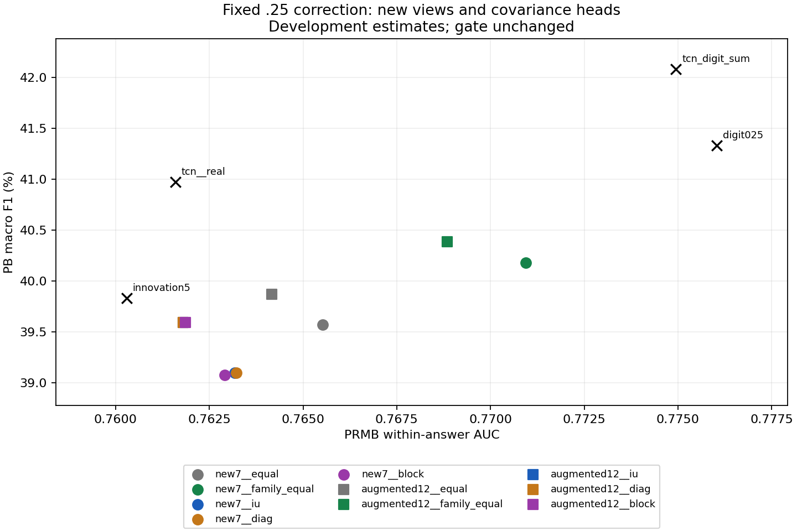
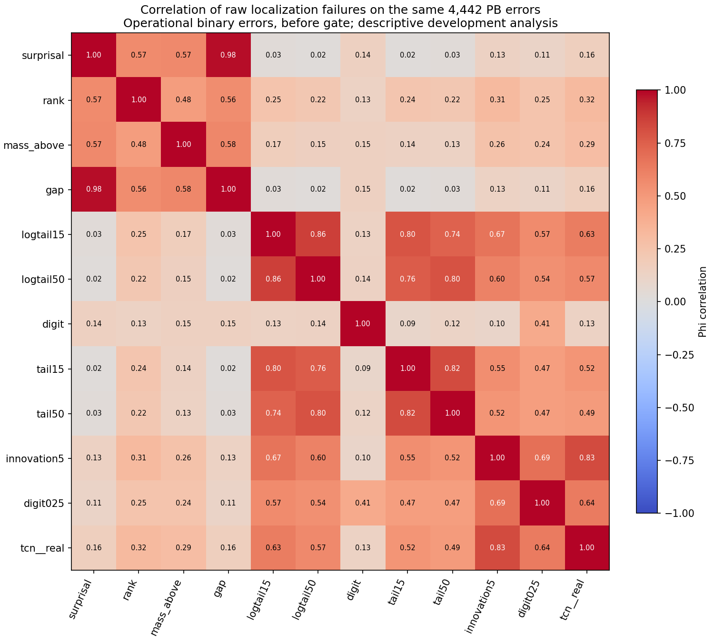
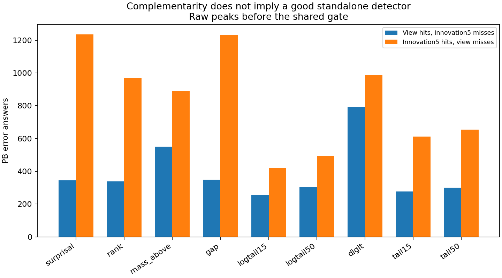

16.09.2026 · כל 13,769 התשובות, 145,597 הצעדים ו־6,968,779 הטוקנים. 28 זרועות חדשות ו־30 ייחוסים. תוצאות פיתוח על אוכלוסייה שכבר שימשה למחקר.
השאלה היא האם התצוגות משלימות זו את שגיאותיה של זו ביחס לאותו יעד, והאם משקול נלמד מנצל זאת טוב יותר משילוב פשוט. מתאם נמוך בין פיצ׳רים אינו הוכחה לעצמאות שגיאות.
הממצא: אין בניסוי יתרון ל־IU-PCR, עם או בלי shrinkage. בשני הבנקים IU פוגע ב־within לעומת equal, גם ברווחי הסמך המתוקנים. מתן משקל שווה למשפחות משפר within לעומת equal, אך עדיין מפסיד לתיקון הספרות לבדו. נמשיך להחזיק ב־digit025 וב־TCN+digit כמועמדי פיתוח; לא נקדם את הבנקים החדשים כתחליף.
זהו ממצא על המתכונים שנבדקו, לא שלילה של כל fusion או כל shrinkage. בבנק החדש IU אינו משחזר את הכשל הקודם של החסרת ספרות כמעט בכל תשובה; בדרך כלל המקדם חיובי, אבל קטן. גם ייצוב שאכן משנה את המטריצה אינו יוצר יתרון משימתי.
מפת נקודות השילוב מקצה לקצה והראיות ההיסטוריות · הפרוטוקול הקפוא
| Method | PB % | within-AUC | PRMScore |
|---|---|---|---|
| original4 | 37.4749 | 0.753436 | 0.634412 |
| innovation5 | 39.8314 | 0.760293 | 0.638830 |
| tcn__real | 40.9718 | 0.761592 | 0.641153 |
| digit025 | 41.3300 | 0.776036 | 0.649780 |
| digit1 | 41.1806 | 0.779274 | 0.649223 |
| tcn_digit_sum | 42.0781 | 0.774945 | 0.652284 |
| add__surprisal | 38.9294 | 0.762025 | 0.645739 |
| add__rank | 37.7308 | 0.761311 | 0.649743 |
| add__mass_above | 40.0411 | 0.762159 | 0.643460 |
| add__gap | 38.8531 | 0.762378 | 0.645494 |
| add__logtail15 | 38.8583 | 0.758550 | 0.641375 |
| add__logtail50 | 38.5761 | 0.759324 | 0.642407 |
| add__digit | 41.3300 | 0.776036 | 0.649780 |
| add__tail15 | 37.0738 | 0.754336 | 0.643348 |
| add__tail50 | 36.5538 | 0.754394 | 0.643881 |
add = הבסיס innovation5 בתוספת 0.25 כפול סטיית התקן שלו, כפול ציון העזר המתוקנן בתוך התשובה. הבסיס נוסף פעם אחת. TCN+digit sum הוא ייחוס משני מהניסוי הקודם ומשתמש בשני תיקונים; הוא אינו ביקורת תואמת אמפליטודה לזרועות החדשות.
new7 מכיל surprisal, rank, mass_above, gap, logtail15, logtail50, digit. augmented12 מוסיף את חמשת הזרמים הקיימים. equal משקלל פיצ׳רים שווה; family_equal משקלל משפחות מקור שווה. IU משתמש במטריצה המקורית; diag ו־block מפעילים IU אחרי shrinkage ליעד אלכסוני או יעד ששומר את הבלוקים של המשפחות.
| Method | PB % | within-AUC | PRMScore |
|---|---|---|---|
| new7__equal | 39.5741 | 0.765523 | 0.648901 |
| new7__family_equal | 40.1790 | 0.770944 | 0.651520 |
| new7__iu | 39.0974 | 0.763182 | 0.647318 |
| new7__diag | 39.0973 | 0.763214 | 0.647342 |
| new7__block | 39.0789 | 0.762915 | 0.647187 |
| augmented12__equal | 39.8702 | 0.764164 | 0.646543 |
| augmented12__family_equal | 40.3862 | 0.768851 | 0.648635 |
| augmented12__iu | 39.5951 | 0.761803 | 0.644356 |
| augmented12__diag | 39.5951 | 0.761803 | 0.644334 |
| augmented12__block | 39.5951 | 0.761858 | 0.644305 |

בכל ההשוואות הללו: תקנון הטוקנים בתוך התשובה, covariance ממורכז, Top10 נפרד לכל זרם ואז משקול. וקטור המשקלים קבוע בתוך התשובה, ואינו routing משתנה לכל טוקן. ה־gate נשאר tail15 באחוזון .33. בניגוד לניסוי הבנק הקודם, זו תוספת מוגבלת לבסיס ולא החלפתו.
ה־shrinkage נאמד ללא תוויות משונות מכפלות הפיצ׳רים בחסימות רצופות של עד 16 טוקנים. זו היוריסטיקת ייצוב; חסימות סמוכות אינן בהכרח עצמאיות. יעד block הוא חלוקה לפי מקור הנדסי, לא גילוי קבוצות בעלות שגיאות עצמאיות.
10,000 דגימות bootstrap מזווגות של קבוצות מקור. CI של 99.6875% עבור שמונה השוואות ושני מדדים. תיקון זה אינו כולל את כל הבחירה ההסתגלותית בהיסטוריית הפרויקט. השוואות נוספות ב־METRICS.json הן משניות עם CI של 95%.
| Contrast | Δ PB pp | CI PB | Δ within | CI within |
|---|---|---|---|---|
| new7__iu minus new7__equal | -0.4767 | [-1.1549, +0.1816] | -0.002341 | [-0.003365, -0.001355] |
| new7__diag minus new7__iu | -0.0001 | [-0.0810, +0.0820] | +0.000032 | [-0.000073, +0.000149] |
| new7__block minus new7__iu | -0.0185 | [-0.0929, +0.0000] | -0.000267 | [-0.000673, -0.000013] |
| new7__family_equal minus new7__equal | +0.6049 | [-0.4680, +1.7168] | +0.005421 | [+0.003985, +0.007049] |
| augmented12__iu minus augmented12__equal | -0.2751 | [-0.9398, +0.3229] | -0.002362 | [-0.003358, -0.001394] |
| augmented12__diag minus augmented12__iu | +0.0000 | [+0.0000, +0.0000] | +0.000000 | [-0.000267, +0.000224] |
| augmented12__block minus augmented12__iu | +0.0000 | [+0.0000, +0.0000] | +0.000055 | [-0.000226, +0.000318] |
| augmented12__family_equal minus augmented12__equal | +0.5160 | [-0.4436, +1.5025] | +0.004687 | [+0.003432, +0.006018] |
סימן הספרות נבדק רק בתשובות שבהן זרם הספרות משתנה. מקדמי IU אינם מנורמלים לסכום 1; לכן מוצג גם חלק הספרות מתוך סכום הערכים המוחלטים של המקדמים. נרמול ציון העזר מבטל את הסקאלה הכוללת של המקדמים. סיכומי alpha הם על כלל התשובות; כשלי התאמה מסומנים במפורש.
| Head | Negative digit weight | Median digit coefficient | Median absolute share | Median alpha | Equal fallbacks |
|---|---|---|---|---|---|
| new7__iu | 2.88% | 0.0156 | 2.44% | - | 0 |
| new7__diag | 3.16% | 0.0154 | 2.39% | 0.1315 | 0 |
| new7__block | 2.94% | 0.0142 | 2.23% | 0.0591 | 0 |
| augmented12__iu | 20.23% | 0.0031 | 0.55% | - | 0 |
| augmented12__diag | 19.14% | 0.0033 | 0.56% | 0.0466 | 0 |
| augmented12__block | 19.19% | 0.0033 | 0.55% | 0.0212 | 0 |
PB: השוואת הפסגה לפני ה־gate על אותן 4,442 תשובות שגויות. PRMB: הפסד דירוג על אותם זוגות של צעד שגוי וצעד נכון, עם משקל שווה לכל תשובה ו־0.5 בקשרים. אלו שגיאות תפעוליות; אינן בדיקה ישירה של שאריות רציפות מול המשתנה החבוי של U-PCR. ניתוחים אלו משתמשים בתוויות לאבחון בלבד.
| View | PB raw miss rate | Failure phi vs base | Unique raw hits | Lost raw hits | PRMB ranking loss |
|---|---|---|---|---|---|
| raw__surprisal | 0.8426 | 0.1341 | 345 | 1235 | 0.3025 |
| raw__rank | 0.7846 | 0.3149 | 339 | 971 | 0.2841 |
| raw__mass_above | 0.7186 | 0.2630 | 551 | 890 | 0.2805 |
| raw__gap | 0.8415 | 0.1327 | 349 | 1234 | 0.3052 |
| raw__logtail15 | 0.6796 | 0.6653 | 253 | 419 | 0.2498 |
| raw__logtail50 | 0.6848 | 0.6017 | 304 | 493 | 0.2479 |
| raw__digit | 0.6862 | 0.1026 | 794 | 989 | 0.3606 |
| raw__tail15 | 0.7179 | 0.5508 | 277 | 613 | 0.2678 |
| raw__tail50 | 0.7222 | 0.5165 | 300 | 655 | 0.2624 |
| innovation5 | 0.6423 | 1.0000 | 0 | 0 | 0.2397 |
| digit025 | 0.6182 | 0.6867 | 379 | 272 | 0.2240 |
| tcn__real | 0.6285 | 0.8260 | 210 | 149 | 0.2384 |


קבוצת 707 ההחמצות הפתוחות היא קבוצה שנבחרה לפי כישלונות היסטוריים, ולכן ההצלות בה הן אבחון תיאורי. פסגת digit בתיקו של אפסים אינה ראיה חיובית לאי־הסכמה. אין להסיק מאיחוד פסגות חסם על fusion.
| Method | Final hits | Raw hits | Recovered /707 | Gained vs digit025 | Lost vs digit025 |
|---|---|---|---|---|---|
| add__surprisal | 1230 | 1508 | 2 | 299 | 408 |
| add__rank | 1170 | 1443 | 2 | 275 | 444 |
| add__mass_above | 1288 | 1609 | 0 | 266 | 317 |
| add__gap | 1227 | 1506 | 2 | 296 | 408 |
| add__logtail15 | 1217 | 1542 | 0 | 228 | 350 |
| add__logtail50 | 1202 | 1534 | 0 | 221 | 358 |
| add__digit | 1339 | 1696 | 28 | 0 | 0 |
| add__tail15 | 1135 | 1453 | 0 | 217 | 421 |
| add__tail50 | 1113 | 1444 | 0 | 219 | 445 |
| new7__equal | 1262 | 1558 | 2 | 248 | 325 |
| new7__family_equal | 1288 | 1602 | 5 | 143 | 194 |
| new7__iu | 1239 | 1525 | 2 | 282 | 382 |
| new7__diag | 1239 | 1527 | 2 | 283 | 383 |
| new7__block | 1238 | 1524 | 2 | 282 | 383 |
| augmented12__equal | 1274 | 1575 | 0 | 246 | 311 |
| augmented12__family_equal | 1298 | 1616 | 2 | 154 | 195 |
| augmented12__iu | 1260 | 1562 | 0 | 263 | 342 |
| augmented12__diag | 1260 | 1562 | 0 | 263 | 342 |
| augmented12__block | 1260 | 1562 | 0 | 263 | 342 |
הזנבות חושבו מחדש כ־1 פחות סכום ההסתברויות השמורות. לא מחסירים logsumexp מלוג־הסתברויות שכבר נורמלו. נוסחת הזנבות נבדקה על כל הטוקנים; ציוני הספרות והבסיס שוחזרו במלואם. rank נעצר ב־50 כאשר הטוקן שסופק אינו בקאש. logtail משתמש ברצפה 1e-12; גרסת המסה הגולמית נשמרת כבקרה, משום ש־Top10 של log אינו זהה ל־log של Top10.
כל 58 חבילות PB ו־within נבדקו בחישוב עצמאי; 30 הייחוסים משתחזרים. PRMScore משתמש בכיול באחוזון .8 מקבוצות מקור אחרות; הזרועות החדשות מותאמות בתוך התשובה בלבד, והייחוסים העצביים שומרים את הכיול המקונן הקודם. חמש בדיקות מספריות עברו. תור FM/DiFlo נשאר ללא שינוי.
הנתונים והצינור הם offline; כיול ה־gate טרנסדוקטיבי. התאמה ללא תוויות אינה הופכת את בחירת הפיצ׳רים והניתוח על אוכלוסיית הפיתוח לאישור חיצוני.
| Method | PB % | within-AUC | PRMScore |
|---|---|---|---|
| raw__surprisal | 22.9359 | 0.697507 | 0.611877 |
| raw__rank | 29.4333 | 0.715889 | 0.641856 |
| raw__mass_above | 34.6202 | 0.719548 | 0.627749 |
| raw__gap | 23.0191 | 0.694776 | 0.610011 |
| raw__logtail15 | 36.0891 | 0.750174 | 0.636052 |
| raw__logtail50 | 35.1214 | 0.752140 | 0.636089 |
| raw__digit | 35.5156 | 0.639385 | 0.136231 |
| raw__tail15 | 33.2849 | 0.732226 | 0.620627 |
| raw__tail50 | 32.8504 | 0.737634 | 0.620906 |
| add__surprisal | 38.9294 | 0.762025 | 0.645739 |
| add__rank | 37.7308 | 0.761311 | 0.649743 |
| add__mass_above | 40.0411 | 0.762159 | 0.643460 |
| add__gap | 38.8531 | 0.762378 | 0.645494 |
| add__logtail15 | 38.8583 | 0.758550 | 0.641375 |
| add__logtail50 | 38.5761 | 0.759324 | 0.642407 |
| add__digit | 41.3300 | 0.776036 | 0.649780 |
| add__tail15 | 37.0738 | 0.754336 | 0.643348 |
| add__tail50 | 36.5538 | 0.754394 | 0.643881 |
| new7__equal | 39.5741 | 0.765523 | 0.648901 |
| new7__family_equal | 40.1790 | 0.770944 | 0.651520 |
| new7__iu | 39.0974 | 0.763182 | 0.647318 |
| new7__diag | 39.0973 | 0.763214 | 0.647342 |
| new7__block | 39.0789 | 0.762915 | 0.647187 |
| augmented12__equal | 39.8702 | 0.764164 | 0.646543 |
| augmented12__family_equal | 40.3862 | 0.768851 | 0.648635 |
| augmented12__iu | 39.5951 | 0.761803 | 0.644356 |
| augmented12__diag | 39.5951 | 0.761803 | 0.644334 |
| augmented12__block | 39.5951 | 0.761858 | 0.644305 |
| digit_standalone | 35.5156 | 0.639385 | 0.136231 |
| digit025 | 41.3300 | 0.776036 | 0.649780 |
| digit1 | 41.1806 | 0.779274 | 0.649223 |
| presence | 39.7521 | 0.771779 | 0.646565 |
| rate | 41.1532 | 0.774964 | 0.648473 |
| permuted | 38.9219 | 0.760928 | 0.638537 |
| tcn_digit_sum | 42.0781 | 0.774945 | 0.652284 |
| tcn_digit_matched | 41.4627 | 0.772607 | 0.649612 |
| bank5_equal | 39.3043 | 0.755063 | 0.637265 |
| bank5_iu | 39.3825 | 0.757218 | 0.638635 |
| bank6_equal | 41.3961 | 0.773468 | 0.648925 |
| bank6_iu | 30.5284 | 0.637115 | 0.581805 |
| tcn__real | 40.9718 | 0.761592 | 0.641153 |
| tcn__shuffled | 39.8180 | 0.761273 | 0.641283 |
| tcn__zero | 39.4342 | 0.760106 | 0.640019 |
| ridge | 40.8472 | 0.761620 | 0.641765 |
| mean16 | 39.8648 | 0.759979 | 0.639336 |
| bocpd | 40.3676 | 0.763223 | 0.642268 |
| noreset | 39.8608 | 0.762839 | 0.642239 |
| zero | 39.3977 | 0.760116 | 0.640378 |
| original4 | 37.4749 | 0.753436 | 0.634412 |
| innovation5 | 39.8314 | 0.760293 | 0.638830 |
| single__H0lim | 36.3335 | 0.743972 | 0.633422 |
| single__VE0 | 36.5270 | 0.753406 | 0.635477 |
| single__VE075 | 37.8892 | 0.732302 | 0.618679 |
| single__VE1 | 36.9021 | 0.737786 | 0.625781 |
| entropy15 | 36.3476 | 0.730111 | 0.625426 |
| RBM12 | 37.1253 | 0.745204 | 0.622215 |
| iu__ridge+tcn+noreset | 41.0378 | 0.760656 | 0.640647 |
| equal__ridge+bocpd+noreset | 40.5585 | 0.763829 | 0.642625 |
CSV · מדדים ורווחי סמך · כל ההחמצות והפסגות · שגיאות לפי תא ומיקום · בדיקות · חתימות ומקורות